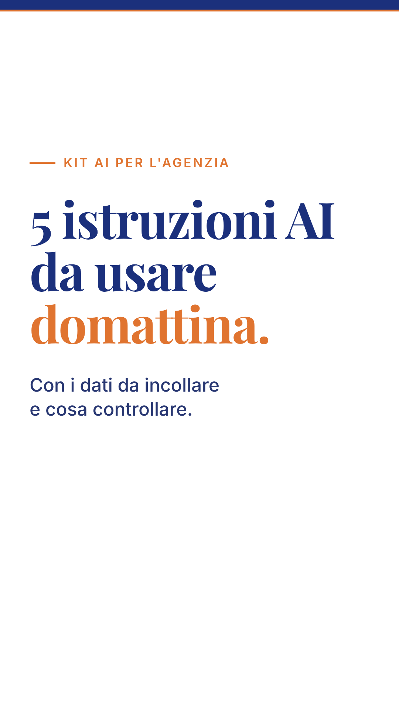
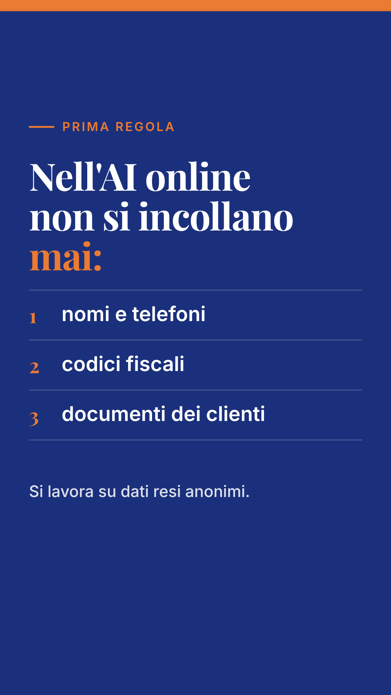
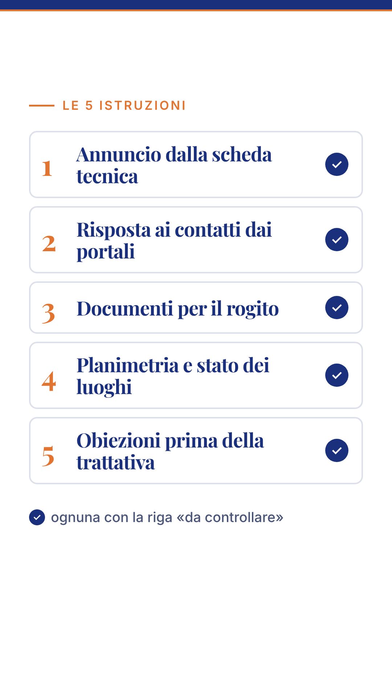
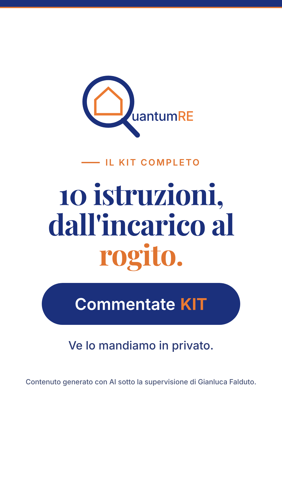

"5 istruzioni AI per l'agenzia." + "Da usare domattina." in arancio

Fondo navy: "Prima regola" + "Nell'AI online non si incollano nomi, codici fiscali e documenti dei clienti."

Lista che si compone riga per riga: 1 Annuncio dalla scheda tecnica · 2 Risposta ai portali · 3 Documenti per il rogito · 4 Planimetria e stato dei luoghi · 5 Obiezioni prima della trattativa

"Il kit completo: 10 istruzioni, dall'incarico al rogito" + pillola "Commentate KIT" + nota AI